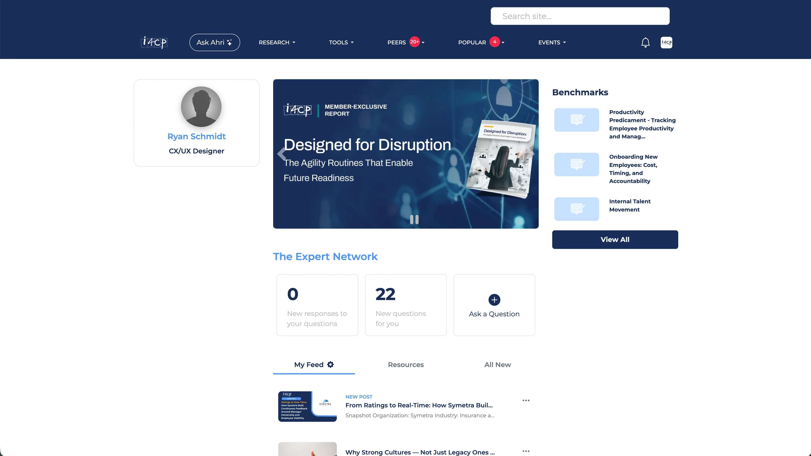
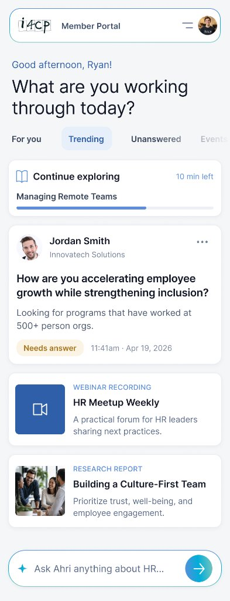
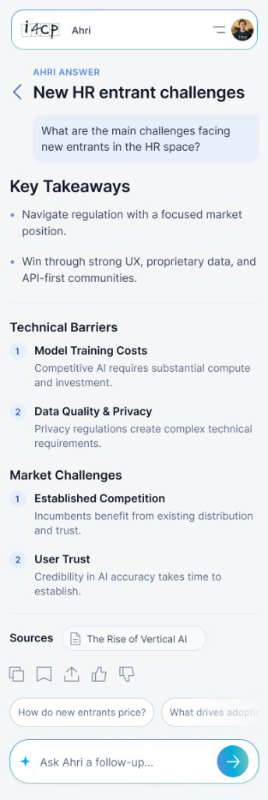

i4cp Member Portal & Research Discovery
Members couldn't find research because our portal was structured like an internal corporate org chart. As i4cp's sole designer, I rebuilt the navigation around how HR practitioners actually think and work, and put our Ahri AI assistant directly into the main search flow.


The Problem: High-Value Research Trapped in an Org Chart
i4cp publishes extensive workforce research and benchmarks, but the legacy portal was organized around internal research committees rather than member tasks. If a VP of Talent needed research on how AI is affecting the HR community, they had to guess which internal division owned the topic and click through three arbitrary folders, with no easy way to navigate back or know where they were.
Search had a similar disconnect. Ahri existed as a separate tool buried in the nav, so members defaulted to a basic keyword box that returned unranked results. Making Ahri contextual to the page the user is viewing let users take quick actions no matter where they were in the product.
Goals
- Organize by member intent: Group research by executive business challenges (such as succession risk or retention) instead of internal i4cp department names.
- Make Ahri the default search: Answer research queries immediately with cited takeaways, while preserving an obvious link to full results.
- Ship a focused MVP first: Overhaul primary navigation and the general look & feel without attempting to 0 to 1 redesign every secondary screen in a single release.
Research: Testing Two Navigation Extremes with HR Executives
i4cp's research leadership had already defined a new four-tier taxonomy before I joined. My job was turning that new taxonomy into a navigation menu an executive could scan in 10 seconds.
I ran moderated usability tests with 5 enterprise HR executives across two early prototypes. A flat mega-menu dumped 40+ links at once and overwhelmed testers, while deep four-level accordions hid content so completely that users thought the library was empty. Progressive disclosure solved both: showing broad practice areas first and revealing deeper topics only after a user hovered in.
The IA Challenge: Four Levels Without Losing the Thread
The content hierarchy spans four tiers: Areas of Focus, Priorities, Topics, and individual resources (posts). The legacy portal mirrored our internal filing system. The redesign organizes research around the strategic questions members ask their teams.
Content hierarchy: Interactive drill-down model
The model moves from broad member intent to specific resources across four tiers. Click each level to see how progressive disclosure presents one decision layer at a time.
- Talent Lifecycle Executive succession, retention, pipelines
- Culture & Employee Experience Engagement, inclusion, culture change
- Workforce Readiness Upskilling, AI adoption, future of work
- HR Strategy Business alignment, executive advisory
- HR Analytics, Tech, & AI People data, tooling, AI integration
- Organization Effectiveness Structure, agility, performance models
- Executive Succession Planning Preparing bench strength for critical C-suite seats
- High-Potential Retention Mitigating flight risk for mission-critical leaders
- Manager Coaching Effectiveness Scaling people leader impact across business units
- C-Suite Turnover Benchmarks Tenure data and unplanned departure trends
- Internal vs. External Fill Ratios Cost and time-to-productivity comparisons
- Boardroom Readiness Criteria Evaluation rubrics for potential CEOs
- 📄 Research Report 2026 Executive Succession Benchmark 38 pages · Defensible peer comparisons
- 📊 Interactive Tool Succession Pipeline Risk Calculator Model bench strength across your leadership team
- 🎥 Member Roundtable Board Succession Best Practices Peer insights from Fortune 500 CHROs
Balancing Instant Answers with Full Search
When an executive types a question, waiting four seconds staring at a blank screen feels broken. We solved this by splitting search into two simultaneous layers: Ahri streams a concise, cited summary line-by-line as it generates, while traditional keyword results load quietly in the background. Members get a direct answer to their question in seconds, but can still click over to browse the full search results.


Unifying Live Peer Exchanges and Working Groups
Beyond on-demand research reports, member executives rely heavily on peer working groups, exchange meetings, and the annual conference. Previously, events were separated into disparate calendar feeds with little context on relevance or peer attendance.
The redesigned Events hub consolidates virtual roundtables, board meetings, and conferences into a single filterable directory. Faceted filters and contextual cards with direct calendar and Zoom actions make discovering and attending relevant sessions effortless.
Outcomes & Impact
The redesigned portal launched on September 1, 2026. Daily active users doubled within the first month as members found benchmarks without needing account manager assistance.
A note on those numbers: Because Ahri was now the primary search box, session counts were naturally going to jump. But our analytics and follow-up interviews with 8 enterprise members confirmed people were actually reading the output. Session lengths grew, follow-up queries increased, and members reported saving 10 to 15 minutes per search compared to opening PDFs.
Before the redesign, finding a specific resource meant guessing which internal committee owned the topic. Now I can just ask Ahri to get the exact post without clicking through ten areas.
Executive feedback highlighted one clear win: instead of digging through 40-page PDFs to find a single statistic for a board deck, Ahri gave them the cited figure in seconds.
Post-MVP Roadmap
We postponed secondary features (smarter customizations, automated email digests, etc.) to ensure the core navigation and contextual AI shipped on schedule for Q3.